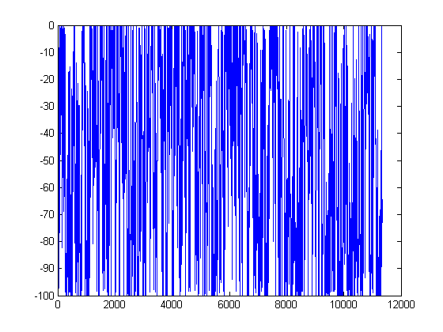
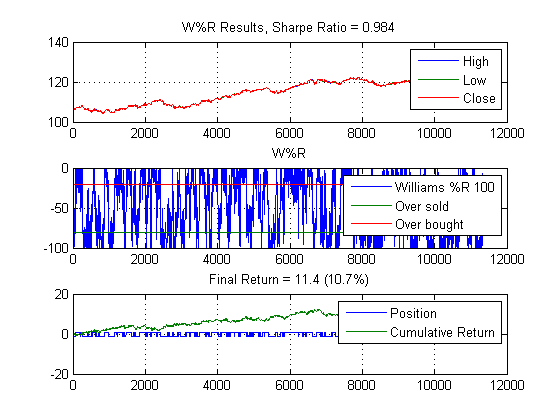
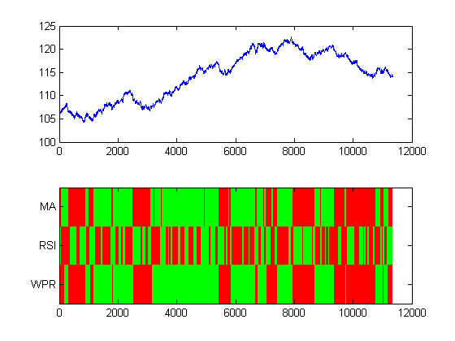
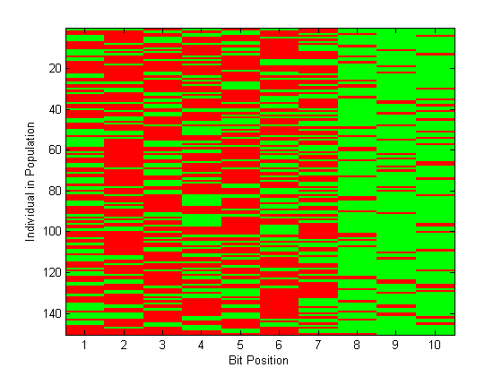
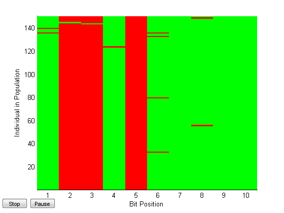
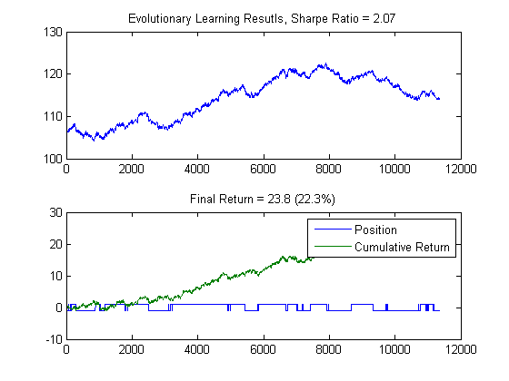
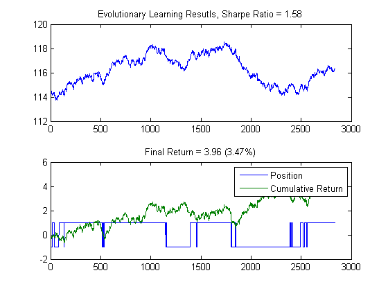

Algorithmic Trading with MATLAB®: More Signals
In AlgoTradingDemo3.m we saw how to add two signals together to get improved results using evolutionary learning. In this demo we'll use extend the approach to three signals: MA, RSI, and Williams %R.
Copyright 2010, The MathWorks, Inc. All rights reserved.
Contents
Load in some data
Again we'll import Bund data sampled minutely
load bund1min testPts = floor(0.8*length(data(:,4))); step = 30; % 30 minute interval Bund = data(1:step:testPts,2:end); BundV = data(testPts+1:step:end,2:end); annualScaling = sqrt(250*60*11/step); cost = 0.01; addpath('gaFiles')
Williams %R
w = willpctr(Bund,50); plot(w)
Williams %R trading strategy
Generate a trading signal each time we cross the -50% mark (up is a buy, down is a sell).
wpr(Bund,100,annualScaling,cost)
WPR performance
range = {1:500};
wfun = @(x) wprFun(x,Bund,annualScaling,cost);
tic
[maxSharpe,param,sh] = parameterSweep(wfun,range);
toc
wpr(Bund,param,annualScaling,cost)
figure
plot(sh)
ylabel('Sharpe''s Ratio')
Elapsed time is 18.228277 seconds.


Generate trading signals
N = 2; M = 396; thresh = 55; P = 2; Q = 110;
sma = leadlag(Bund(:,end),N,M,annualScaling,cost);
srs = rsi(Bund(:,end),[15*Q Q],thresh,annualScaling,cost);
swr = wpr(Bund,param,annualScaling,cost);
signals = [sma srs swr];
names = {'MA','RSI','WPR'};
Trading signals
Plot the "state" of the market represented by the signals
figure ax(1) = subplot(2,1,1); plot(Bund(:,end)); ax(2) = subplot(2,1,2); imagesc(signals') cmap = colormap([1 0 0; 0 0 1; 0 1 0]); set(gca,'YTick',1:length(names),'YTickLabel',names); linkaxes(ax,'x');
Generate initial population
Generate initial population for signals
close all I = size(signals,2); pop = initializePopulation(I); imagesc(pop) xlabel('Bit Position'); ylabel('Individual in Population') colormap([1 0 0; 0 1 0]); set(gca,'XTick',1:size(pop,2))
Fitness Function
Objective is to find a target bitstring (minimum value)
type fitness
function f = fitness(pop,indicator,price,scaling,cost)
% See also tradeSignal, initializePopulation
%%
% Copyright 2010, The MathWorks, Inc.
% All rights reserved.
%% Generate Trading Signal from Population
s = tradeSignal(pop,indicator);
s = (s*2-1); % scale to +/-1 range
col = size(s,2);
%% PNL Caclulation
r = [zeros(1,col);
s(1:end-1,:).*repmat(diff(price),1,col)-abs(diff(s))*cost/2];
f = -scaling*sharpe(r,0);
Objective function definition
obj = @(pop) fitness(pop,signals,Bund(:,end),annualScaling,cost)
obj =
@(pop)fitness(pop,signals,Bund(:,end),annualScaling,cost)
Evalute objective for population
obj(pop)
ans =
Columns 1 through 7
0.0792 0.6602 0.0792 -0.9522 -1.9546 0.6575 -2.0052
Columns 8 through 14
-0.6905 0.6575 -2.0052 0.0792 0.6575 -1.9757 0.6575
Columns 15 through 21
0.6575 -1.7754 -0.6905 -1.8794 0.6654 0.6575 0.6654
Columns 22 through 28
0.6602 -1.9546 0.6575 -2.0052 0.6575 -1.9757 0.0792
Columns 29 through 35
0.6541 -1.9757 -2.0113 0.6575 0.6575 -1.7246 0.6602
Columns 36 through 42
0.6602 -1.9757 0.6602 0.6602 -0.3422 -0.6905 -0.6905
Columns 43 through 49
0.6602 -2.0113 -1.9757 -0.3422 -0.1935 -0.6905 -1.9757
Columns 50 through 56
-0.8912 0.0792 0.6575 -0.6905 -1.9757 -0.9522 -1.7246
Columns 57 through 63
-1.9757 1.0413 -0.6905 -0.9522 -1.7246 0.6575 -1.9757
Columns 64 through 70
0.6602 -0.6905 0.6575 -1.9757 -1.9757 -2.0113 0.6602
Columns 71 through 77
-1.9569 0.6575 0.6602 -0.9522 -1.9757 -1.9569 -2.0052
Columns 78 through 84
-1.9757 -2.0078 0.6602 -1.9546 -0.6905 0.0792 -1.9757
Columns 85 through 91
-0.9522 -0.2550 -2.0690 0.6541 0.6654 -0.6905 -0.6905
Columns 92 through 98
-1.7246 -1.8794 0.6575 -0.8196 -0.9522 -0.6905 0.6541
Columns 99 through 105
-1.9757 0.6602 0.6602 -1.9757 -1.9757 -0.6905 -0.6905
Columns 106 through 112
-2.0690 -0.6905 -0.6905 -1.9757 -0.9522 -2.0078 0.0792
Columns 113 through 119
0.0792 0.6575 -0.8196 0.6575 0.6654 -2.0690 0.6602
Columns 120 through 126
0.6575 0.9020 0.6575 -1.9757 -0.6905 -1.9757 -0.9522
Columns 127 through 133
0.6602 -1.9757 -0.6905 0.6541 -1.7246 0.6575 -2.0052
Columns 134 through 140
0.6575 -2.0289 0.0792 -1.9757 -2.0289 0.6575 -1.9757
Columns 141 through 147
0.0792 0.0792 -1.7246 0.6575 -1.9757 -1.8794 0.6575
Columns 148 through 150
-2.0078 -2.0000 0.6654
Solve With Genetic Algorithm
Find best trading rule and maximum Sharpe ratio (min -Sharpe ratio)
options = gaoptimset('Display','iter','PopulationType','bitstring',... 'PopulationSize',size(pop,1),... 'InitialPopulation',pop,... 'CrossoverFcn', @crossover,... 'MutationFcn', @mutation,... 'PlotFcns', @plotRules,... 'Vectorized','on'); [best,minSh] = ga(obj,size(pop,2),[],[],[],[],[],[],[],options)
Best Mean Stall
Generation f-count f(x) f(x) Generations
1 300 -2.069 -1.04 0
2 450 -2.069 -1.259 1
3 600 -2.069 -1.265 2
4 750 -2.069 -1.416 3
5 900 -2.069 -1.64 4
6 1050 -2.069 -1.81 5
7 1200 -2.069 -1.871 6
8 1350 -2.069 -1.904 7
9 1500 -2.069 -1.927 8
10 1650 -2.069 -1.922 9
11 1800 -2.069 -1.99 10
12 1950 -2.069 -2.01 11
13 2100 -2.069 -2.025 12
14 2250 -2.069 -1.981 13
15 2400 -2.069 -1.997 14
16 2550 -2.069 -2.011 15
17 2700 -2.069 -2.035 16
18 2850 -2.069 -2.009 17
19 3000 -2.069 -2.027 18
20 3150 -2.069 -2.033 19
21 3300 -2.069 -2.017 20
22 3450 -2.069 -2.011 21
23 3600 -2.069 -1.992 22
24 3750 -2.069 -1.992 23
25 3900 -2.069 -1.974 24
26 4050 -2.069 -1.975 25
27 4200 -2.069 -2.016 26
28 4350 -2.069 -2.011 27
29 4500 -2.069 -2.026 28
30 4650 -2.069 -1.997 29
Best Mean Stall
Generation f-count f(x) f(x) Generations
31 4800 -2.069 -2.002 30
32 4950 -2.069 -2.008 31
33 5100 -2.069 -1.985 32
34 5250 -2.069 -2.031 33
35 5400 -2.069 -2.007 34
36 5550 -2.069 -2.02 35
37 5700 -2.069 -2.006 36
38 5850 -2.069 -2.012 37
39 6000 -2.069 -2.003 38
40 6150 -2.069 -2.028 39
41 6300 -2.069 -2.013 40
42 6450 -2.069 -2.009 41
43 6600 -2.069 -2.015 42
44 6750 -2.069 -2.019 43
45 6900 -2.069 -2.042 44
46 7050 -2.069 -2.017 45
47 7200 -2.069 -2.008 46
48 7350 -2.069 -2.023 47
49 7500 -2.069 -2.049 48
50 7650 -2.069 -2.043 49
51 7800 -2.069 -2.017 50
Optimization terminated: average change in the fitness value less than options.TolFun.
best =
1 0 0 1 0 1 1 1 1 1
minSh =
-2.0690
 Evaluate Best Performer
s = tradeSignal(best,signals); s = (s*2-1); % scale to +/-1 r = [0; s(1:end-1).*diff(Bund(:,end))-abs(diff(s))*cost/2]; sh = annualScaling*sharpe(r,0); % Plot results figure ax(1) = subplot(2,1,1); plot(Bund(:,end)) title(['Evolutionary Learning Resutls, Sharpe Ratio = ',num2str(sh,3)]) ax(2) = subplot(2,1,2); plot([s,cumsum(r)]) legend('Position','Cumulative Return') title(['Final Return = ',num2str(sum(r),3), ... ' (',num2str(sum(r)/Bund(1,end)*100,3),'%)']) linkaxes(ax,'x');
sma = leadlag(BundV(:,end),N,M,annualScaling,cost); srs = rsi(BundV(:,end),[P Q],thresh,annualScaling,cost); swr = wpr(BundV,param,annualScaling,cost); signals = [sma srs swr]; s = tradeSignal(best,signals); s = (s*2-1); % scale to +/-1 r = [0; s(1:end-1).*diff(BundV(:,end))-abs(diff(s))*cost/2]; sh = annualScaling*sharpe(r,0); % Plot results figure ax(1) = subplot(2,1,1); plot(BundV(:,end)) title(['Evolutionary Learning Resutls, Sharpe Ratio = ',num2str(sh,3)]) ax(2) = subplot(2,1,2); plot([s,cumsum(r)]) legend('Position','Cumulative Return') title(['Final Return = ',num2str(sum(r),3), ... ' (',num2str(sum(r)/BundV(1,end)*100,3),'%)']) linkaxes(ax,'x');
This result isn't as good as the pure moving average case, but it's a step in the right direction compared to the MA+RSI case. Another exercise to try is to use this method to combine different signals that capture market dynamics better (say a bear, bull, and sideways market) and calibrate using the moving training/validation window discussed in demo 3.
But alas, we're moving on to the next demo, which discusses how you can speed up you MATLAB code, for you performance junkies out there. On to AlgoTrading5.m.